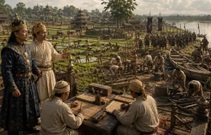
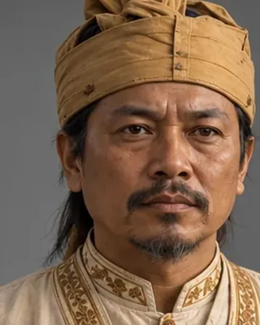

c. 1608–1615
মোমাই তামুলী বৰবৰুৱা
c. 1590–1663 (sources vary) · First Borbarua

Rose from humble origins to become the first Borbarua. Systematised the paik system in 1609, commanded at Duimunsila (1638) and signed the Treaty of Asurar Ali (1639). Father of Lachit Borphukan.
The infobox gives 1664 and a category gives 1650 for his death.
Record confidence: medium.